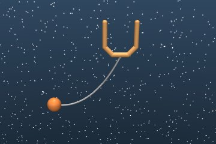

Practicing inside a learned simulator, from a fixed dataset
A world model is a learned simulator that an agent can practice in instead of the real environment. I am studying whether that practice helps when the simulator, its reward model, and the starting policy are all learned from one fixed set of demonstrations. The testbed is a simple control task, catching a ball in a cup, and every policy is judged by how it does in the real environment, not in the simulator.